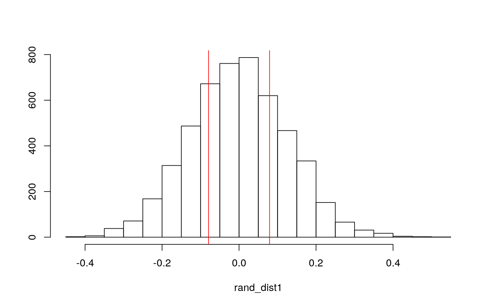
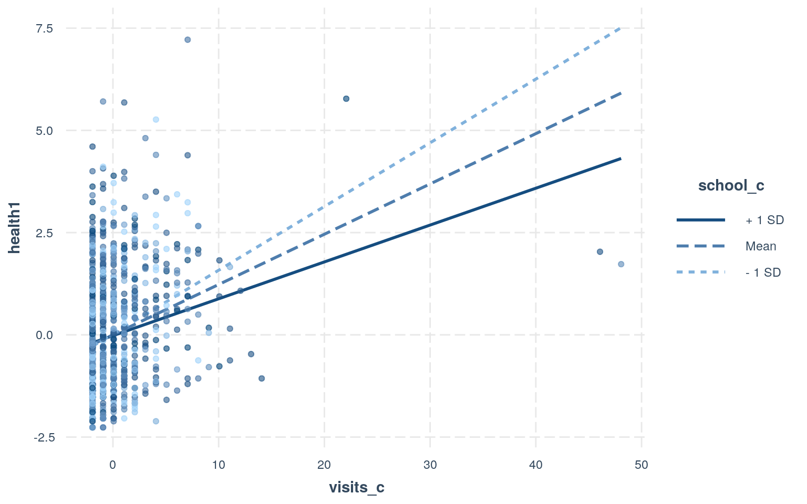
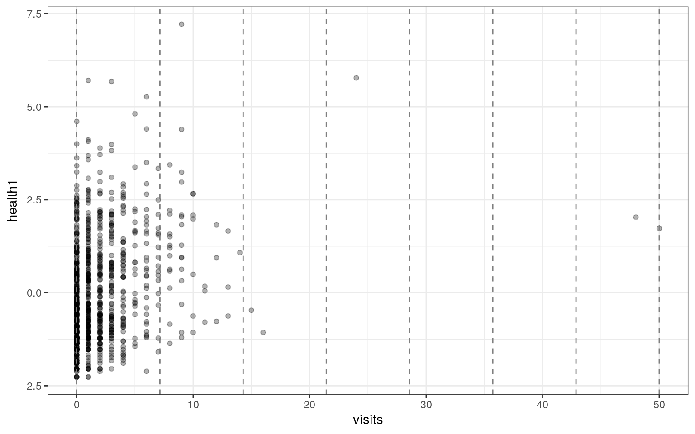
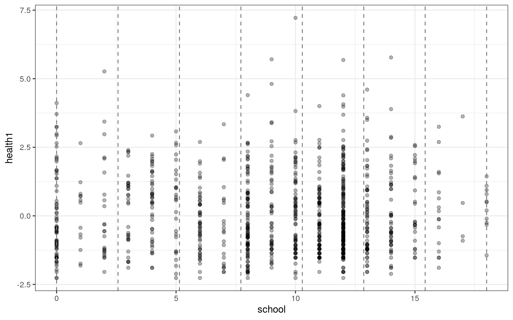
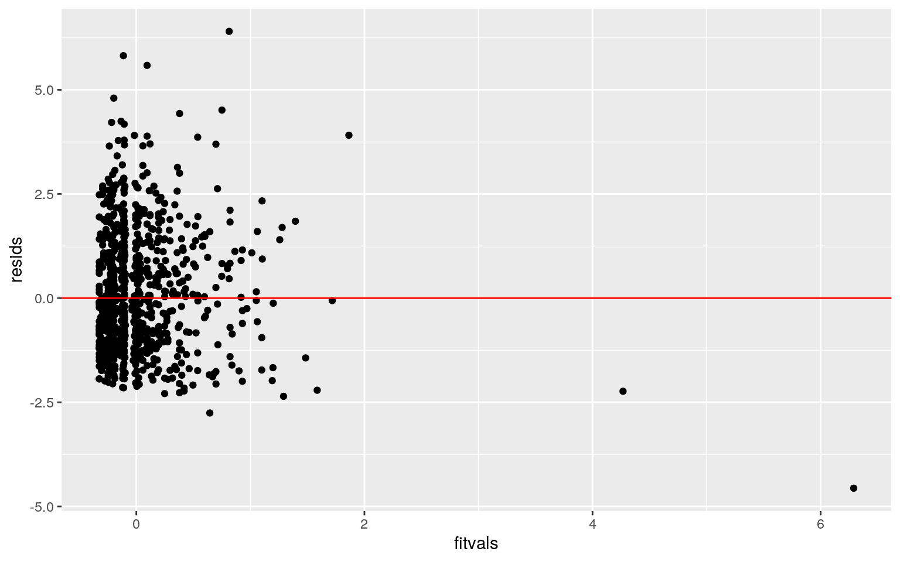
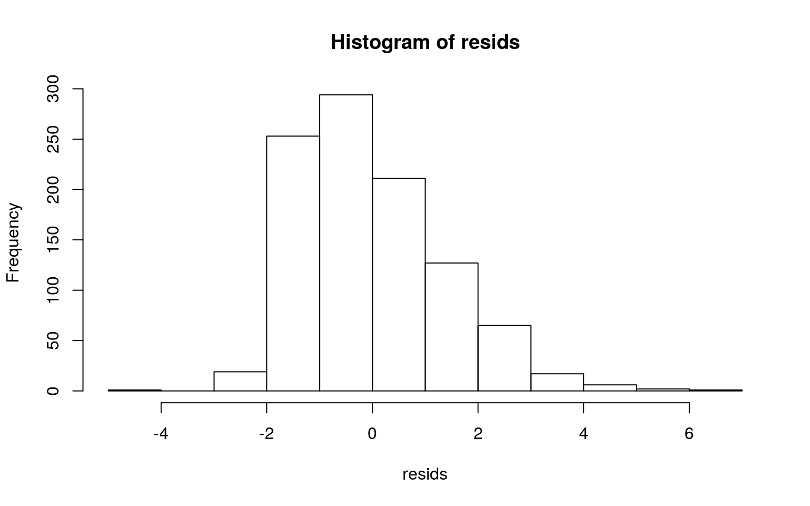
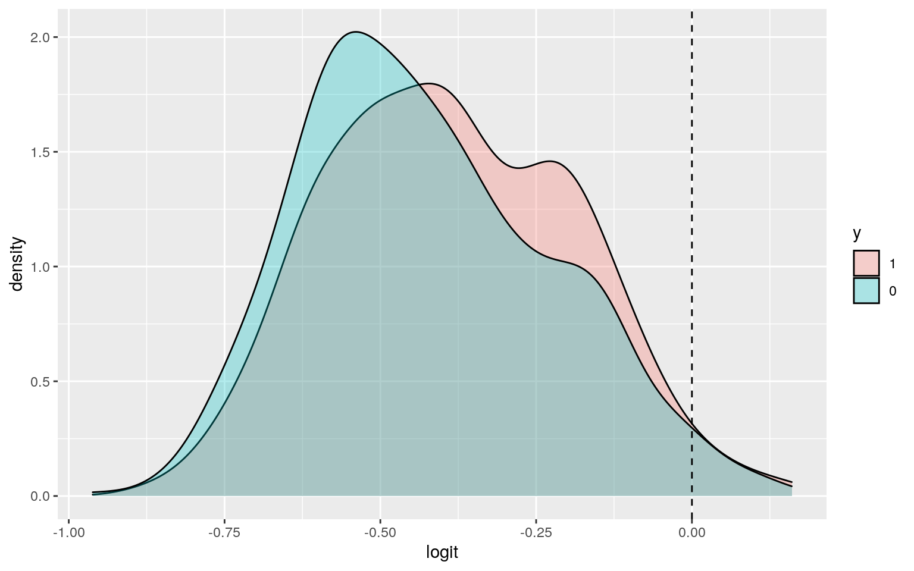
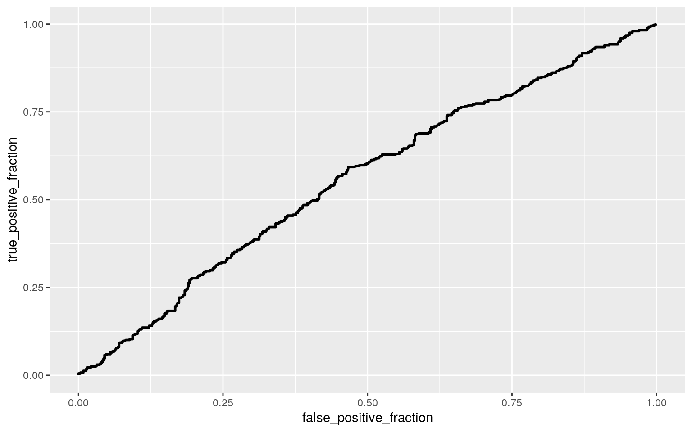
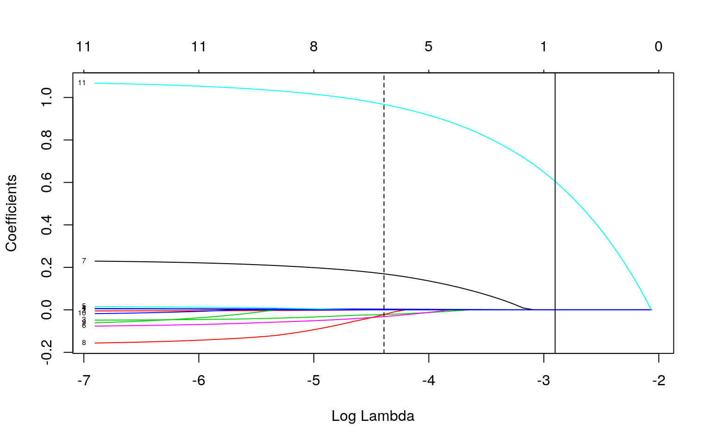

I am using the Medicaid Utilization dataset from https://vincentarelbundock.github.io/Rdatasets/datasets.html. The data were collected from a 1986 consumer survey and had 996 respondents (observations). There are a total of 14 variables. 'visits' gives the number of doctor visits. 'exposure' gives the length of the abulatory care observation period in days. 'age' gives the age of the respondent in years. 'income' gives the annual household income. 'health1' and 'health2' are the first and second principal components/1000 of the three health variables:functional limitations, acute conditions, and chronic conditions. These provide a measure of the quality of health of the respondent. 'access' gives us the availability of health services, with 0 being low and 1 high. 'married' tells us the maritial status of the individuals (Yes/no). 'gender' indicates male or female. 'ethnicity' is given as caucasian or other. 'school' gives the number of years of schooling completed. 'enrollment' tells us whether the individual is in a medicaid demonstration program. 'program' tells us whether an individual participates in the Aid to Families with Dependent Children program or the Supplementary Security Income program
medicaid <- read.csv("Medicaid1986.csv")
medicaid %>% na.omit ->medicaid
head(medicaid)## X visits exposure children age income health1 health2
access married gender ethnicity school
## 1 1 0 100 1 24 14.500 0.495 -0.854 0.50 no female cauc
13
## 2 2 1 90 3 19 6.000 0.520 -0.969 0.17 no female cauc 11
## 3 3 0 106 4 17 8.377 -1.227 0.317 0.42 no female cauc 12
## 4 4 0 114 2 29 6.000 -1.524 0.457 0.33 no female cauc 12
## 5 5 11 115 1 26 8.500 0.173 -0.599 0.67 no female cauc
16
## 6 6 3 102 1 22 6.000 -0.905 0.062 0.25 no female other
12
## enroll program
## 1 yes afdc
## 2 yes afdc
## 3 yes afdc
## 4 yes afdc
## 5 yes afdc
## 6 yes afdcinstall.packages("rstatix",repos = "http://cran.us.r-project.org")
library(rstatix)
group <- medicaid$ethnicity
DVs <- medicaid %>% select(visits,income,health1,school,access)
#Test multivariate normality for each group (null: assumption met)
sapply(split(DVs,group), mshapiro_test)## cauc other
## statistic 0.6312029 0.4932306
## p.value 5.58874e-36 1.324415e-28The assumption for multivariate normality was not met. Since at least one p-value <0.05, we did not test any further assumptions. If all would have been greater than 0.05 we would have subsequently tested homogeneity of covariance matrices.
man<-manova(cbind(visits,income,health1,school,access)~ethnicity, data=medicaid)
summary(man) #overall MANOVA is significant, follow up with one way## Df Pillai approx F num Df den Df Pr(>F)
## ethnicity 1 0.076057 16.299 5 990 1.786e-15 ***
## Residuals 994
## ---
## Signif. codes: 0 '***' 0.001 '**' 0.01 '*' 0.05 '.' 0.1
' ' 1summary.aov(man) #one-way ANOVA## Response visits :
## Df Sum Sq Mean Sq F value Pr(>F)
## ethnicity 1 12.2 12.230 1.0869 0.2974
## Residuals 994 11184.0 11.252
##
## Response income :
## Df Sum Sq Mean Sq F value Pr(>F)
## ethnicity 1 134.9 134.940 10.334 0.001348 **
## Residuals 994 12980.0 13.058
## ---
## Signif. codes: 0 '***' 0.001 '**' 0.01 '*' 0.05 '.' 0.1
' ' 1
##
## Response health1 :
## Df Sum Sq Mean Sq F value Pr(>F)
## ethnicity 1 1.98 1.9804 0.9591 0.3276
## Residuals 994 2052.48 2.0649
##
## Response school :
## Df Sum Sq Mean Sq F value Pr(>F)
## ethnicity 1 1302 1301.97 73.699 < 2.2e-16 ***
## Residuals 994 17560 17.67
## ---
## Signif. codes: 0 '***' 0.001 '**' 0.01 '*' 0.05 '.' 0.1
' ' 1
##
## Response access :
## Df Sum Sq Mean Sq F value Pr(>F)
## ethnicity 1 0.010 0.009953 0.2924 0.5888
## Residuals 994 33.838 0.034042pairwise.t.test(medicaid$income,medicaid$ethnicity,p.adj="none") #pairwise##
## Pairwise comparisons using t tests with pooled SD
##
## data: medicaid$income and medicaid$ethnicity
##
## cauc
## other 0.0013
##
## P value adjustment method: nonepairwise.t.test(medicaid$school,medicaid$ethnicity,p.adj="none")##
## Pairwise comparisons using t tests with pooled SD
##
## data: medicaid$school and medicaid$ethnicity
##
## cauc
## other <2e-16
##
## P value adjustment method: noneI conducted a MANOVA test to determine whether any of the dependent variables (visits,income,health1,school,access) differed by ethnicity. Significant differences were found among the ethnicity for at least one dependent variable, approximate F=16.299, p=1.786e-15.
Univariate ANOVAS for each DV were conducted as a follow. The univariate ANOVAs for income and school were both significant p=0.001348 & p=2.2e-16, respectively.
I performed 8 tests in total (1 MANOVA, 5 ANOVA, 2 pairwise). Therefore I should use boneferroni level of .05/8 = .00625 to keep the type 1 error rate in check. The pairwise t test for income showed that the difference between the ethnicity groups caucasian and other was significant after the Bonefferoni correction (p=0.0013). Similarly, the pairwise t test for school showed that the difference between caucasian and other was also significant after the correction (p<2e-16).
medicaid %>% group_by(gender) %>% summarize(mean=mean(health1)) %>% summarize(meandiff=diff(mean)) #cutoff## # A tibble: 1 x 1
## meandiff
## <dbl>
## 1 -0.0793rand_dist1<-vector()
for(i in 1:5000){
new<-data.frame(health1=sample(medicaid$health1),gender=medicaid$gender)
rand_dist1[i]<-mean(new[new$gender=="male",]$health1)-
mean(new[new$gender=="female",]$health1)}
{hist(rand_dist1,main="",ylab="");abline(v=c(-0.079276,0.079276),col="red")} 
mean(rand_dist1>0.079276 | rand_dist1 < -0.079276) # get pvalue## [1] 0.5322Ho: mean value of health 1 (1st PC of 3 health status variables) is the same for male vs.female respondents Ha: mean value of health 1 (1st PC of 3 health status variables) is different for male vs.female respondents Since p-value=.5308 is less than .05 we fail to reject Ho. .5308 is the probability of observing a mean difference as extreme as the one produced under the randomized distribution.
medicaid$visits_c <- medicaid$visits - mean(medicaid$visits)
medicaid$school_c <- medicaid$school - mean(medicaid$school)
fit1 <- lm(health1~visits_c*school_c,data=medicaid)
summary(fit1)##
## Call:
## lm(formula = health1 ~ visits_c * school_c, data =
medicaid)
##
## Residuals:
## Min 1Q Median 3Q Max
## -4.5623 -1.0541 -0.2520 0.8316 6.4030
##
## Coefficients:
## Estimate Std. Error t value Pr(>|t|)
## (Intercept) 0.001040 0.043818 0.024 0.9811
## visits_c 0.122973 0.013561 9.068 <2e-16 ***
## school_c -0.004768 0.010069 -0.474 0.6360
## visits_c:school_c -0.007543 0.003496 -2.157 0.0312 *
## ---
## Signif. codes: 0 '***' 0.001 '**' 0.01 '*' 0.05 '.' 0.1
' ' 1
##
## Residual standard error: 1.383 on 992 degrees of freedom
## Multiple R-squared: 0.07674, Adjusted R-squared: 0.07395
## F-statistic: 27.49 on 3 and 992 DF, p-value: < 2.2e-16Intercept: .001040 is the mean health1 value for individuals with average number of visits and average years of school. visits_c: for every 1 unit increase in visits predicted health1 would increase by .122973 for this group. school_c: FOr every 1 unit increase in # years of school, predicted health1 would decrease by .004768 visits_c:school_c: The presence of school_c decreases the effect of visits_c on health1 by .007543
install.packages("interactions",repos = "http://cran.us.r-project.org")
library(interactions)
interact_plot(fit1, pred = visits_c, modx = school_c, plot.points = TRUE) #interaction between visits_c and school_c
install.packages("lmtest",repos = "http://cran.us.r-project.org")
install.packages("sandwich",repos = "http://cran.us.r-project.org")
library(lmtest)
library(sandwich)
breaks <- seq(min(medicaid$visits), max(medicaid$visits), len=8)
ggplot(medicaid, aes(visits, health1)) + geom_point(alpha=.3) + theme_bw()+ geom_vline(xintercept=breaks,lty=2,color='gray50')
breaks2 <- seq(min(medicaid$school), max(medicaid$school), len=8)
ggplot(medicaid, aes(school, health1)) + geom_point(alpha=.3) + theme_bw()+ geom_vline(xintercept=breaks2,lty=2,color='gray50')
resids<-fit1$residuals
fitvals<-fit1$fitted.values
ggplot()+geom_point(aes(fitvals,resids))+geom_hline(yintercept=0, color='red')
hist(resids) Linearity is likley violated since there aren't celar linear relationships between each x variable and health1. Homoskedacity may be violated since points appear to fan out across x axis. The distribution appears to be skewed right so normality may be violated.
#now adjust SEs to meet failed assumptions. corrected SEs now robust to homoskedacity violations
coeftest(fit1, vcov = vcovHC(fit1)) #regression after adjusting standard errors for violation##
## t test of coefficients:
##
## Estimate Std. Error t value Pr(>|t|)
## (Intercept) 0.0010396 0.0442643 0.0235 0.981267
## visits_c 0.1229733 0.0353097 3.4827 0.000518 ***
## school_c -0.0047677 0.0102763 -0.4639 0.642788
## visits_c:school_c -0.0075425 0.0063498 -1.1878 0.235184
## ---
## Signif. codes: 0 '***' 0.001 '**' 0.01 '*' 0.05 '.' 0.1
' ' 1The only remaining significant predictor is visits_c (p=.000518). For every 1 unit increase in visits, predicted health1 would increase by .1229733 units. Unlike previously, when using robust SEs, the interaction between visits_c and school_c is no longer significant (p=.235184).
summary(fit1)##
## Call:
## lm(formula = health1 ~ visits_c * school_c, data =
medicaid)
##
## Residuals:
## Min 1Q Median 3Q Max
## -4.5623 -1.0541 -0.2520 0.8316 6.4030
##
## Coefficients:
## Estimate Std. Error t value Pr(>|t|)
## (Intercept) 0.001040 0.043818 0.024 0.9811
## visits_c 0.122973 0.013561 9.068 <2e-16 ***
## school_c -0.004768 0.010069 -0.474 0.6360
## visits_c:school_c -0.007543 0.003496 -2.157 0.0312 *
## ---
## Signif. codes: 0 '***' 0.001 '**' 0.01 '*' 0.05 '.' 0.1
' ' 1
##
## Residual standard error: 1.383 on 992 degrees of freedom
## Multiple R-squared: 0.07674, Adjusted R-squared: 0.07395
## F-statistic: 27.49 on 3 and 992 DF, p-value: < 2.2e-16Since the adjusted R^2 value is .07395, .07395 of the variation in health1 can be explained by the model. Note, this adjusted value accounts for the penalty for each extra explanatory variable.
samp_distn<-replicate(5000, {
boot_dat <- sample_frac(medicaid, replace=T) #bootstrap/row resample
fit2 <- lm(health1~visits_c*school_c, data=boot_dat) #fit model on bootstrap sample
coef(fit2)
})
## Estimated SEs
samp_distn %>% t %>% as.data.frame %>% summarize_all(sd)## (Intercept) visits_c school_c visits_c:school_c
## 1 0.04391801 0.02833031 0.01025795 0.005244182The bootstrap SE for the intercept is very similar to but slightly higher than the original and robust SEs. The bootstrap SE for visits_c is greater than the original SE but less than the robust SE> The bootstrap SE for school_c is just slightly smaller than the original SE and slightly smaller than the robust SE. The bootstrap SE for visits_c:school_c is greater than the original SE but less than the robist SE
Creating a new binary variable y based off access (access to health services).Any value greater than .5 is turned into 1, which means high access and any value not >.5 is =0, meaning low access
medicaid <- medicaid%>%mutate(y=ifelse(access>=.5,1,0))
head(medicaid)## X visits exposure children age income health1 health2
access married gender ethnicity school
## 1 1 0 100 1 24 14.500 0.495 -0.854 0.50 no female cauc
13
## 2 2 1 90 3 19 6.000 0.520 -0.969 0.17 no female cauc 11
## 3 3 0 106 4 17 8.377 -1.227 0.317 0.42 no female cauc 12
## 4 4 0 114 2 29 6.000 -1.524 0.457 0.33 no female cauc 12
## 5 5 11 115 1 26 8.500 0.173 -0.599 0.67 no female cauc
16
## 6 6 3 102 1 22 6.000 -0.905 0.062 0.25 no female other
12
## enroll program visits_c school_c y
## 1 yes afdc -1.9307229 3.970884 1
## 2 yes afdc -0.9307229 1.970884 0
## 3 yes afdc -1.9307229 2.970884 0
## 4 yes afdc -1.9307229 2.970884 0
## 5 yes afdc 9.0692771 6.970884 1
## 6 yes afdc 1.0692771 2.970884 0fit3<-glm(y~income+school+age,data=medicaid,family="binomial"(link="logit"))
coeftest(fit3)##
## z test of coefficients:
##
## Estimate Std. Error z value Pr(>|z|)
## (Intercept) -1.2539128 0.3082966 -4.0672 4.758e-05 ***
## income 0.0157814 0.0179416 0.8796 0.379077
## school 0.0307205 0.0162029 1.8960 0.057961 .
## age 0.0079040 0.0028057 2.8171 0.004846 **
## ---
## Signif. codes: 0 '***' 0.001 '**' 0.01 '*' 0.05 '.' 0.1
' ' 1exp(coef(fit3))## (Intercept) income school age
## 0.285386 1.015907 1.031197 1.007935Intercept: The odds of having high access to healthcare for income=0,school=0, age=0 is .285386 Income: controlling for school and age, for every $1 additional increase in annual income, odds of high access to healthcare increase by a factor of 1.015907 School: Controlling for income and age, for every 1 year increase in schooling, odds of high access to healthcare increase by a factor of 1.031197 Age: Controlling for income and school, for every 1 year increase in age, odds of high access to healthcare increase by a factor of 1.007935 (significant)
prob<-predict(fit3,type="response") #predicted prob for every one
pred<-ifelse(prob>.5,1,0)
table(prediction=pred,truth=medicaid$y)%>%addmargins## truth
## prediction 0 1 Sum
## 0 588 389 977
## 1 10 9 19
## Sum 598 398 996(588+9)/996 #accuracy## [1] 0.5993976(9/398) #TPR/sensitivity## [1] 0.02261307(588/598) #TNR/Specificity## [1] 0.9832776(9/19) #PPR/precision## [1] 0.4736842.599 is the probability of correctly predicting low or high access. 0.023 is the probability of predicting high access if they really do have high access to healthcare. 0.983 is the probability of predicting low access for those who really do have low access. 0.474 is the proportion of those calssified as high access who actually are
medicaid$logit<-predict(fit3) #pred
medicaid %>% mutate(y=factor(y,levels=c("1","0"))) %>%
ggplot(aes(logit, fill=y))+geom_density(alpha=.3)+
geom_vline(xintercept=0,lty=2)
install.packages("plotROC",repos = "http://cran.us.r-project.org")
library(plotROC)
ROCplot<-ggplot(medicaid)+geom_roc(aes(d=y,m=prob), n.cuts=0)
ROCplot
calc_auc(ROCplot)## PANEL group AUC
## 1 1 -1 0.5599276AUC=.5599276. This model is a bad fit :(
fit4 <-glm(y~visits+exposure+children+age+income+health1+health2+married+gender+ethnicity+enroll+program,data=medicaid,family="binomial"(link="logit"))
summary(fit4)##
## Call:
## glm(formula = y ~ visits + exposure + children + age +
income +
## health1 + health2 + married + gender + ethnicity +
enroll +
## program, family = binomial(link = "logit"), data =
medicaid)
##
## Deviance Residuals:
## Min 1Q Median 3Q Max
## -1.5861 -0.9485 -0.7283 1.1377 1.9946
##
## Coefficients:
## Estimate Std. Error z value Pr(>|z|)
## (Intercept) -0.784939 0.830973 -0.945 0.3449
## visits 0.008265 0.020963 0.394 0.6934
## exposure -0.005675 0.007421 -0.765 0.4444
## children -0.056113 0.062500 -0.898 0.3693
## age 0.008062 0.008637 0.933 0.3506
## income 0.017208 0.020096 0.856 0.3919
## health1 -0.085201 0.051343 -1.659 0.0970 .
## health2 0.229928 0.094611 2.430 0.0151 *
## marriedyes -0.163191 0.181400 -0.900 0.3683
## gendermale -0.072308 0.209370 -0.345 0.7298
## ethnicityother -0.021906 0.151899 -0.144 0.8853
## enrollyes 1.075352 0.136437 7.882 3.23e-15 ***
## programssi -0.145413 0.448128 -0.324 0.7456
## ---
## Signif. codes: 0 '***' 0.001 '**' 0.01 '*' 0.05 '.' 0.1
' ' 1
##
## (Dispersion parameter for binomial family taken to be 1)
##
## Null deviance: 1340.3 on 995 degrees of freedom
## Residual deviance: 1253.7 on 983 degrees of freedom
## AIC: 1279.7
##
## Number of Fisher Scoring iterations: 4medicaid$prob <- predict(fit4, type="response")
class_diag(medicaid$prob,medicaid$y)## acc sens spec ppv f1 auc
## 1 0.6465863 0.4648241 0.7675585 0.5709877 0.5124654
0.6724761.647 is the probability of correctly predicting low or high access. 0.465 is the probability of predicting high access if they really do have high access to healthcare. 0.768 is the probability of predicting low access for those who really do have low access. 0.571 is the proportion of those calssified as high access who actually are. AUC=.672, indicating the model is a poor fit
k=10
data <- medicaid %>% sample_frac #random
folds <- ntile(1:nrow(data),n=10) # fold labels
diags<-NULL
for(i in 1:k){
train <- data[folds!=i,] #training set omitting i
test <- data[folds==i,] #test set of just i
truth <- test$y #truth labels from i
fit5 <- glm(y~visits+exposure+children+age+income+health1+health2+married+gender+ethnicity+enroll+program, data=train, family="binomial")
probs <- predict(fit5, newdata=test, type="response")
diags<-rbind(diags,class_diag(probs,truth))
}
summarize_all(diags,mean) # now compare new auc back to one for model in original dataset## acc sens spec ppv f1 auc
## 1 0.6304848 0.4586538 0.7467883 0.5477087 0.4965257
0.6503395.634 is the probability of correctly predicting low or high access. 0.457 is the probability of predicting high access if they really do have high access to healthcare. 0.754 is the probability of predicting low access for those who really do have low access. 0.554 is the proportion of those calssified as high access who actually are. AUC=.651, indicating the model is a poor fit. The out of sample AUC is a bit lower than the in sample AUC, indicating that the model is doing slightly worse in CV and may be overfitting. Given, the model was poor to begin with
install.packages("glmnet",repos = "http://cran.us.r-project.org")
library(glmnet)
medicaid_resp<-as.matrix(medicaid$y) #response
medicaid_preds<-model.matrix(y~visits+exposure+children+age+income+health1+health2+married+gender+ethnicity+enroll+program,data=medicaid)[,-1] #predictors
cv <- cv.glmnet(medicaid_preds,medicaid_resp, family="binomial") #optimal lambda via 10-fold CV
{plot(cv$glmnet.fit, "lambda", label=TRUE); abline(v = log(cv$lambda.1se)); abline(v = log(cv$lambda.min),lty=2)} #lambda plot
lasso_fit2<-glmnet(medicaid_preds,medicaid_resp,family="binomial",lambda=cv$lambda.1se)
coef(lasso_fit2)## 13 x 1 sparse Matrix of class "dgCMatrix"
## s0
## (Intercept) -0.7137638
## visits .
## exposure .
## children .
## age .
## income .
## health1 .
## health2 .
## marriedyes .
## gendermale .
## ethnicityother .
## enrollyes 0.6046232
## programssi .The coefficient for enrollyes is the only nonzero coeff and is the only one that is retained. This new LASSO model appears to be oversimplified
k=10
medicaid_las <- medicaid_preds[,c('enrollyes','visits')] #pulling visits too for variable to join by
medicaid_las%>%as.data.frame()->medicaid_las
medicaid_las%>%left_join(medicaid)->medicaid2
head(medicaid2)## enrollyes visits X exposure children age income health1
health2 access married gender ethnicity
## 1 1 0 1 100 1 24 14.500 0.495 -0.854 0.50 no female cauc
## 2 1 0 3 106 4 17 8.377 -1.227 0.317 0.42 no female cauc
## 3 1 0 4 114 2 29 6.000 -1.524 0.457 0.33 no female cauc
## 4 1 0 7 92 2 24 4.000 -1.202 0.202 0.50 no female cauc
## 5 1 0 10 101 1 24 6.000 -0.235 -0.562 0.67 yes female
cauc
## 6 1 0 12 111 1 20 6.000 -0.719 -0.180 0.17 no female
cauc
## school enroll program visits_c school_c y logit prob
## 1 13 yes afdc -1.930723 3.970884 1 -0.4360211 0.4678652
## 2 12 yes afdc -1.930723 2.970884 0 -0.6186986 0.4807741
## 3 12 yes afdc -1.930723 2.970884 0 -0.5613634 0.5257838
## 4 11 yes afdc -1.930723 1.970884 1 -0.6631664 0.5168139
## 5 15 yes afdc -1.930723 5.970884 1 -0.5087216 0.4220140
## 6 12 yes afdc -1.930723 2.970884 0 -0.6324990 0.4722165data <- medicaid2 %>% sample_frac #random
folds <- ntile(1:nrow(data),n=10) # fold labels
diags<-NULL
for(i in 1:k){
train <- data[folds!=i,] #training set omitting i
test <- data[folds==i,] #test set of just i
truth <- test$y #truth labels from i
fit6 <- glm(y~enrollyes, data=train, family="binomial")
probs <- predict(fit6, newdata=test, type="response")
diags<-rbind(diags,class_diag(probs,truth))
}
summarize_all(diags,mean)## acc sens spec ppv f1 auc
## 1 0.5938021 0 1 NaN NaN 0.499477This new out of sample AUC is the worst out of all the models created. I mentioned it previosuly, but I think LASSO may have oversimplified the model to the point where it is unable to make accurate predictions due to inadequate number of predictor variables.